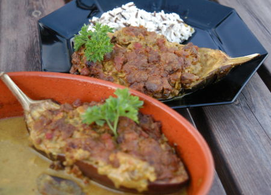

| Zutaten für 4 Personen: | |
| 2 | Auberginen |
| 300 g | Hackfleisch |
| 1 | Zwiebel |
| 4 | Brötchen |
| 50 g | Speckwürfeli |
| 1 dl | Saurer Rahm |
| Salz | |
| Currypulver | |
| Thymian | |
| Rosmarin | |
| Bouillon | |
| Weisswein | |
| Rosinen | |
Ofen auf 200°C Vorwärmen.
Auberginen der Länge nach halbieren und sorgfältig aushöhlen, leicht würzen. Bouillon anmachen und Brot darin einweichen. Auberginenfleisch hacken.
Hackfleisch zusammen mit gehackter Zwiebel und Speckwürfeln anbraten.
Sodann Auberginenfleisch mit eingeweichten Brötchen, und saurem Rahm gut vermischen, Rosinen beigeben und mitbraten. Mit Salz, Curry, Thymian und Rosmarin würzen.
Die Fleischfarce in die Auberginen einfüllen, in eine feuerfeste Form geben. Mit etwas Bouillon und Weisswein begiessen und im gut vorgeheizten Ofen 35 - 40 Minuten schmoren lassen.
Wildreis passt prima als Beilage.
Tip: Allenfalls gewürfelte Stangensellerie dazugeben gemäss einem ähnlichen Rezept aus Betty Bossi Zeitung, Nr. 8, Sep 1992, Seite 3.
Herbert Eigenmann, Code: AUG
Das Rezept schmeckt recht gut. Nüsse wären sicher auch noch gut. Richard Eigenmann, 1.6.2000
Sonja Keller gibt dem Gericht die Note 3 von 4 da sie Rosinen sonst nicht so gerne im Gericht mag und die
eigenwillige Curry-Mischung "speziell" fand. 30.7.2003
Am 16.6.2020 erneut zubereitet. Richi findet Rosinen fein. Sandra hat lieber keine Rosinen aber mit Käse überbacken.